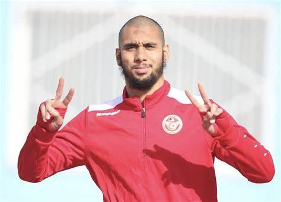
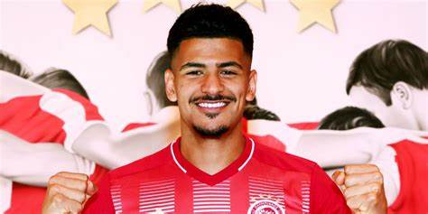

Aissa Leidouni
Aïssa Laïdouni, né le 13 décembre 1996 à Livry-Gargan est un footballeur international tunisien qui évolue au poste de milieu de
terrain au Ferencváros TC.
.

Wajdi kechrida
Wajdi Kechrida (arabe : وجدي كشريدة), né le 5 novembre 1995 à Nice, est un footballeur international tunisien évoluant au poste d'arrière droit.

Mohamed drager
Mohamed Dräger est un footballeur germano-tunisien né le 25 juin 1996 à Tunis. Né en Allemagne, il représentela Tunisieau niveau international.
J'ai adoré votre site